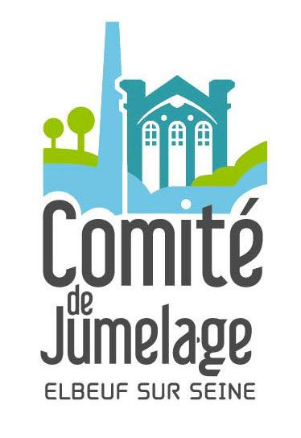

Ils m'ont fait confiance

Rendre l'expérience utilisateur la plus positive possible par rapport à un produit ou un service.
Concevoir pour l'utilisateur et avec l'utilisateur, tel est ma devise d'UX designer.
Lorsque l’expérience de l’utilisateur est supérieure à l’attente de l’utilisateur, la confiance est établie.
Colm Tuite – Designer d’application.
Créer des interfaces design, ergonomiques et responsive.
Le design, c’est la créativité associée à la stratégie.
Rob Curedale – Designer produit.
Animer. De l'animation au montage vidéo.
En terme de graphisme, il y a selon moi deux choses essentielles, la simplicité et la clarté.
Un bon design nait de ces deux éléments.
Lindon Leader – Designer graphique.
Mise en place de la méthodologie UX pour répondre aux besoins du client (audit, benchmark, entretiens, tests utilisateurs, personas, UX maps, ateliers d'idéation dont un avec le client, wireframes, maquettes graphiques et livrable).
L'objectif de ce TP était de proposer une refonte du site web du Musée des Arts Forains en mobile first. Avant de commencer le projet de refonte, nous avons travaillé sur la recherche utilisateur pour connaître les besoins des utilisateurs venant sur le site et au musée.
Travaux pratiques "Design appliqué aux objets connectés" - UX Design - L'École Multimédia
Création de wireframes et maquettes graphiques